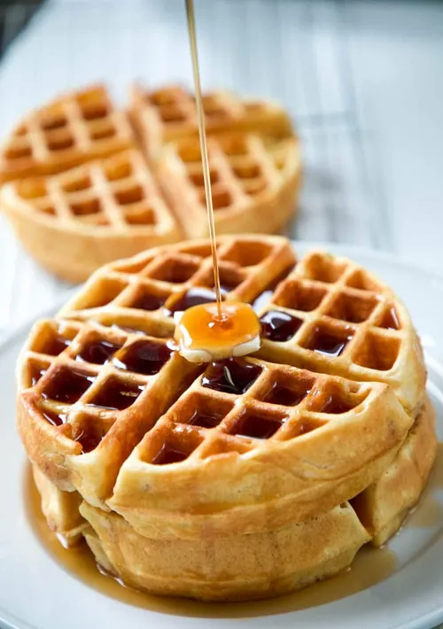

they come in many styles
A waffle is a crisp, grid-patterned cake made from leavened batter or dough and cooked between two patterned, hinged metal plates in a waffle iron. This cooking method creates a distinctive surface with deep pockets that hold toppings like syrup, butter, or fruit, while ensuring a crispy exterior and soft, airy interior.
Try changing the look of the page.
Do you think waffles are a good snack?